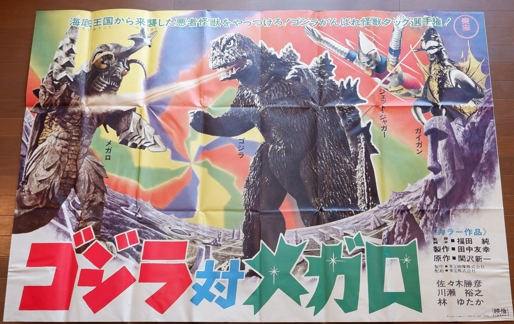

SHOWA ERA / FILM RECORD 1973
ゴジラ対メガロ

CURATOR COLLECTION
館長収蔵資料COLLECTION RECORD PENDING収蔵資料は整理中。写真と記録が揃い次第、ここへ収録します。
CURATOR'S NOTE
館長コメントOFFICIAL TRAILER
公式映像資料FILM CONTEXT
この作品のメガロ核実験の被害を受けたシートピアが、地上への報復に守護神メガロを送り込む。
ジェットジャガーをめぐる攻防は、ゴジラとメガロの対決へと発展する。
ガイガンも加わり、戦いは二対二の怪獣戦へ。
SUBJECT IN THIS FILM
本作でのメガロは、シートピアに崇められる守護神であり、地上への侵攻を担う存在。両腕のドリルと昆虫を思わせる姿が特徴で、ガイガンと組んでゴジラとジェットジャガーに挑む。
作品資料：東宝公式予告編 ／ 日本語版 作品・スタッフ情報
掲載スチール：既存資料からの再録。収蔵品の写真とは区別して保管。
館長手記：未記入